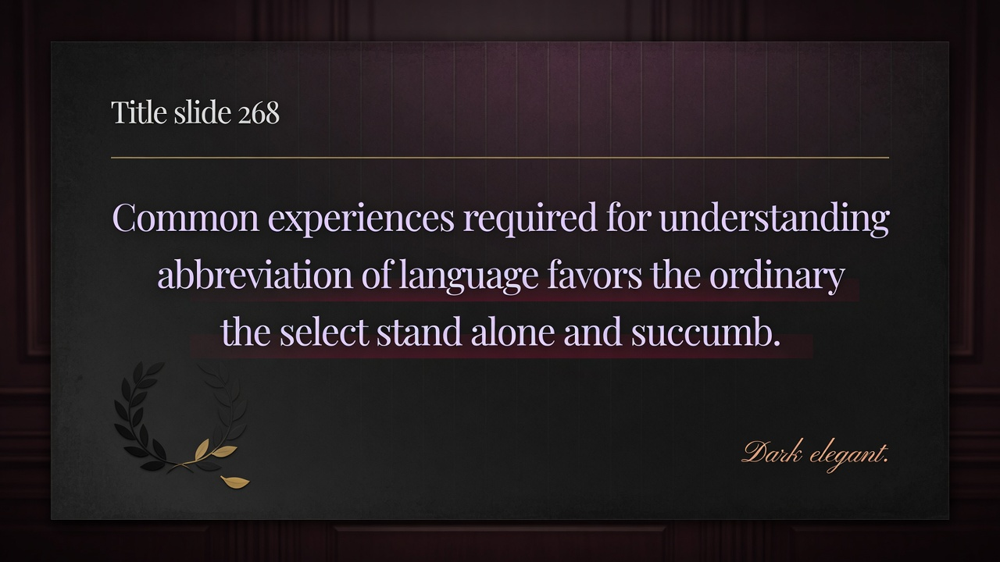
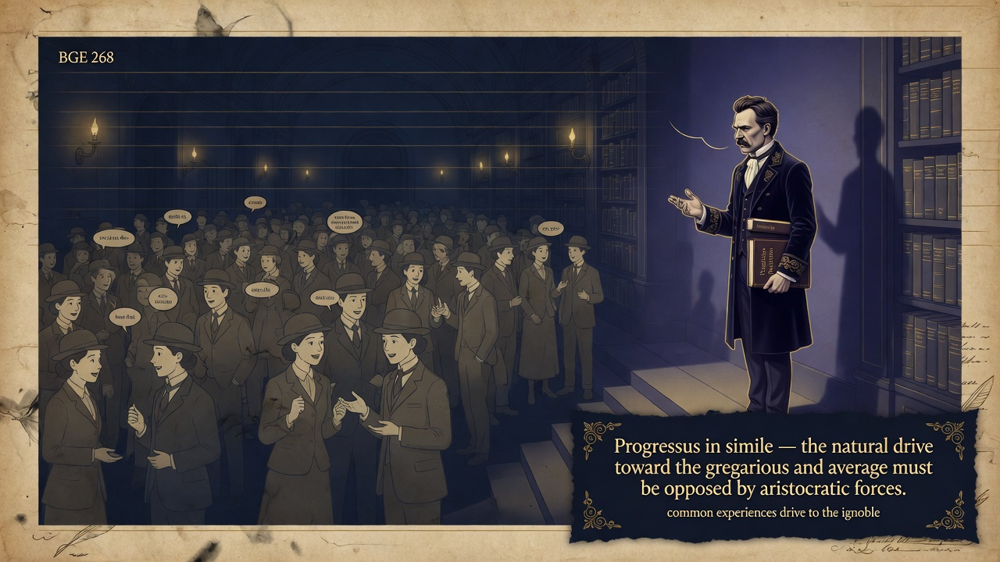

Section 268
Shared average experiences are the great leveling force in history—mutual intelligibility on common terms naturally produces mediocrity. Social media, memes, and globalized culture have industrialized this process. Protected spaces and high standards are the only counterforce.
- “ that understands itself with relative ease. The greater the shared danger or need, the more imperative the demand for quick, reliable mutual comprehension. Nietzsche identifies the easy communicability of need—the realm of average, ordinary, and common experiences—as ”
- “ The similar, the ordinary, the gregarious possess an immense advantage in the struggle for survival and influence. The more select, refined, unique, or difficult natures are at a corresponding disadvantage: they stand alone, are less readily understood, and ”
Mass media, social platforms, globalized culture, and the abbreviation of discourse into memes and slogans have accelerated the process Nietzsche described.
- Philosophers pretend their opinions were discovered through pure, cold, logical steps.
- In fact they start with a personal wish or prejudice and then hunt for arguments to back it up after the fact.
- They hate being seen as advocates, so they wear the mask of objective, disinterested reason.
- Every great philosophy is really the personal confession of its creator — a kind of unconscious autobiography.
- In simple modern terms, this shows that people (and whole systems of thought) often disguise personal biases, fears, or power interests as pure objective truth — so we should stay alert to the real motives behind big ideas, including our own.
Common experience is the great democratizing and leveling force in human history. The drive toward mutual intelligibility on average terms naturally produces the ignoble unless immense aristocratic counter-forces are brought to bear.
This aphorism supports the entire critique of modern Europe as moving toward herd-animal morality and prepares the positive project of a new nobility and philosophers of the future capable of imposing rank against the natural gregarious drift.
Mass media, social platforms, globalized culture, and the abbreviation of discourse into memes and slogans have accelerated the process Nietzsche described. Common experiences are now manufactured at industrial scale. The rare individual or higher culture must deliberately create protected spaces, rigorous standards, and counter-communities if it's not to be dissolved into the average. The progress toward the ignoble is the default. only conscious opposition changes the trajectory.
Visual Slides


